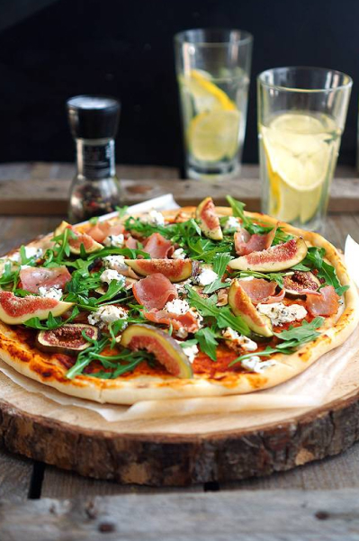

🍕 Пицца с инжирини, прошутто и козьим сыром
📋 Ингредиенты
- Тесто для пиццы (дрожжевое) — 250 г (1 шар)
- Прошутто — 60 г
- Инжир свежий — 3 шт.
- Козий сыр (шевр или камамбер) — 50 г
- Оливковое масло — 3 ст. л.
- Томатный соус — 2 ст. л.
- Рукола — 50 г
- Перец чёрный свежемолотый — для подачи
👩🍳 Приготовление
- Подготовьте тесто. Раскатайте тесто в круг толщиной 2–3 мм. Я делаю бортик: заворачиваю край внутрь и слегка защипываю — получается аккуратный ободок.
- Смажьте основу. Переложите тесто на противень. Сбрызните оливковым маслом, затем нанесите тонкий слой томатного соуса.
- Выложите начинку. Раскрошите козий сыр, нарежьте инжир дольками, прошутто — полосками. Равномерно распределите по пицце. Не бойтесь, что начинки мало — этот стиль пиццы ценит баланс, а не горы сыра.
- Запекайте. Разогрейте духовку до максимума (250–280 °C). Выпекайте пиццу 7–12 минут. Здесь нечему подгорать, как в Маргарите, поэтому можно дождаться уверенной золотистой корочки у теста и прошутто.
- Подготовьте зелень. Пока пицца печётся, в миске смешайте руколу с оставшимся оливковым маслом (1 ст. л.), нежно перемешайте.
- Подача. Выньте пиццу, сразу выложите сверху руколу и щедро посыпьте свежемолотым чёрным перцем. Режьте на куски и подавайте горячей.
Пицца получается очень гармоничной: кисло-сладкий козий сыр, строгое прошутто, мягкий сладковатый инжир, оливковое масло, усиливающее вкус, и хрустящее тесто. Уверена, вы будете готовить её снова и снова, роднули! 💚🤍❤️
